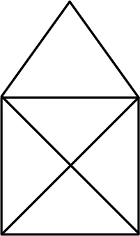
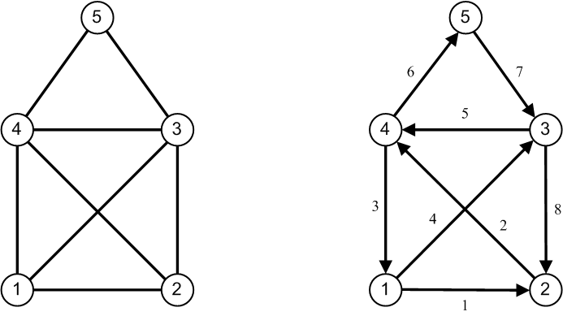

Das Haus des Nikolaus ist ein altes Zeichenspiel und vermutlich jedem Leser unter Ihnen bekannt, der Kinder sein eigen nennen darf. Ziel des Spiels ist es, ein Haus (wie in Abbildung 1 dargestellt) “ohne Absetzen des Stiftes“ zu zeichnen, also in einem Zug mit acht Strecken. Sie werden die Beobachtung machen, dass dies nicht immer zum Ziel führt, da man öfters in die Situation gelangt, eine Strecke mehrmals zeichnen zu müssen, was nicht erlaubt ist. Kinder erfreuen sich an diesem Spiel zusätzlich daran, ihre Eltern lautstark am Spielen zu beteiligen, indem sie an jeder Ecke, die sie erreichen, ein Wort des Satzes “Das ist das Haus vom Ni–ko–laus” aussprechen – zu jeder Strecke gehört ein Wort bzw. eine Silbe. Wie viele verschiedene Möglichkeiten gibt es, das Haus zu zeichnen?
{{< figure src="/img/houseofsantaclaus/HouseSantaClaus_01.png" width="50%" >}}
Abbildung 1: Das Haus des Nikolaus – als Spiel betrachtet.
Entwerfen Sie geeignet ein oder mehrere C++–Klassen, um alles Lösungen des “Haus des Nikolaus”-Problems zu ermitteln. Im Lösungsvorschlag finden Sie zwei Realisierungsansätze vor:
Schreiben Sie ein Programm, das alle Möglichkeiten berechnet und in ansprechender Form auf der Konsole ausgibt.
std::views::iota, std::ranges::find_if, std::ranges::for_each)std::vector und std::arraystd::adjacent_findstd::all_ofstd::generatemutable)Die Umsetzung der Fragestellung erfordert zunächst eine Analyse des geschilderten Problems mit der Zielsetzung, ein mathematisches Modell zu finden, auf das das Haus des Nikolaus abbildbar ist. Einfache Überlegungen zeigen, dass das Haus des Nikolaus als ein ungerichteter Graph angesehen werden kann mit fünf Knoten (die Ecken des Hauses) und acht Kanten (die Verbindungen zwischen den Knoten), siehe die linke Seite in Abbildung 2. Unter einem ungerichteten Graphen versteht man einen Graphen, für dessen Kanten keine Regelung besteht, in welcher Richtung sie durchlaufen werden müssen.
{{< figure src="/img/houseofsantaclaus/HouseSantaClaus_02.png" width="50%" >}}
Abbildung 2: Das Haus des Nikolaus – von einem Mathematiker betrachtet.
Damit haben wir die Aufgabenstellung auf die Frage reduziert, wieviele Wege es in einem bestimmten ungerichteten Graphen gibt, der jede Kante genau einmal traversiert. Eine Lösung des Problems finden Sie in Abbildung 2 auf der rechten Seite vor: Eine zu zeichnende Kante wird als Paar der zugehörigen Knoten repräsentiert: (1,2) für die erste gezeichnete Kante, (2,4) für die zweite usw. Wir erkennen am Beispiel von (1,5) auch, dass nicht jedes Knotenpaar eine gültige Kante beschreibt!
Wir betrachten in dieser Fallstudie einen iterativen Ansatz zur programmiersprachlichen Lösung der Aufgabe in zwei Implementierungsvarianten. Es gibt auch einen rekursiven Lösungsansatz, der geringe Kenntnisse aus der Graphentheorie voraussetzt, den wir hier aber nicht weiter verfolgen wollen.
Der iterative Ansatz assoziiert eine Lösung mit einer Folge von Ziffern, also mit einer natürlichen Zahl. Dazu nummerieren wir die Ecken des Hauses durch, unten links liegt die Ecke 1, die Ziffern 2, 3 und 4 folgen entgegen dem Uhrzeigersinn für die weiteren Ecken des Rechtecks. Fehlt noch die Spitze, sie erhält die Ziffer 5. Dem in Abbildung 2 gezeichneten Haus ordnen wir folglich beim Malen die Ziffernfolge 1, 2, 4, 1, 3, 4, 5, 3, 2 zu, oder etwas kompakter die neunstellige Zahl 124134532.
Nicht alle neunstelligen Zahlen eignen sich zur Darstellung einer korrekten Zeichnung. Zahlen, die die Ziffern 6 bis 9 oder die Null enthalten, scheiden von vorne herein aus. Also kommen nur Zahlen zwischen 111111111 und 155555552 in Betracht. Von diesen Zahlen sind solche, die zweimal dieselbe Ziffer unmittelbar aufeinanderfolgend enthalten, wiederum nicht geeignet, da eine Kante prinzipiell nur zwischen zwei Knoten (mit unterschiedlicher Knotennummer) verlaufen kann. In dem zuvor beschriebenen Wertebereich scheiden also weitere Zahlen aus.
Nun sind wir fast schon am Ziel angekommen. Die Kanten des vorliegenden Graphen lauten gemäß der Knotennummerierung aus Abbildung 2 (1, 2), (1, 3), (1, 4), (2, 3), (2, 4), (3, 4), (3, 5) und (4, 5). Eine neunstellige Zahl mit den Ziffern z1, z2, ... , z9 beschreibt ebenfalls 8 Kanten (z1, z2), (z2, z3) bis (z8, z9). Finden wir jede Kante des Nikolaushauses genau einmal in der Menge der Kanten (zi, zi+1), i = 1,2,...,8 vor, so haben wir mit der neunstelligen Zahl einen zulässigen Weg zum Zeichnen gefunden.
Ein Mathematiker wiederum würde zu der Formulierung neigen, dass zwischen den beiden zuvor beschriebenen Kantenmengen genau dann eine bijektive Abbildung existiert, wenn ein zulässiger Pfad zum Zeichnen vorliegt. Da Sie aber definitiv kein Mathematikbuch erworben haben, vermutlich auch keines erwerben wollten, habe ich es bei der etwas anschaulicheren Darstellung belassen – Ihr ausdrückliches Einverständnis natürlich vorausgesetzt :-).
Quellcode: Siehe auch Github.
Im Folgenden stellen wir zwei Implementierungen für einen iterativen Lösungsansatz vor.
Beide Lösungen besitzen gemeinsame Codeanteile. Diese lassen sich, ganz im Sinne des objektorientierten Paradigmas,
elegant in einer (abstrakten) Basisklasse HouseOfSantaClaus zusammenfassen.
Diese abstrakte Basisklasse führen wir aus mehreren Gründen ein. Zum einen, um festzulegen,
dass es eine abstrakte Methode solve (pure virtuell) gibt, die dazu da ist,
die Menge aller Lösungen des Problems zu berechnen. Damit ist klar, welche Erwartungen an eine Spezialisierung
der Klasse HouseOfSantaClaus gestellt werden. Zum anderen, um Methoden zu implementieren,
die von allen abgeleiteten Klassen einfach übernommen werden können (im Sinne der Vererbung)
und damit deren Realisierung vereinfachen.
Dazu zählt eine getter-Methode wie numberOfSolutions, um die Anzahl der Lösungen zu ermitteln
wie auch eine Überladung des <<-Operators, um die berechneten Lösungen komfortabel auf der Konsole auszugeben.
Schnittstelle und Implementierung der abstrakten Basisklasse HouseOfSantaClaus finden Sie
in Listing 1 und Listing 2 vor:
01: class HouseOfSantaClaus
02: {
03: friend std::ostream& operator<< (std::ostream&, const HouseOfSantaClaus&);
04:
05: protected:
06: static constexpr int Min = 111111111;
07: static constexpr int Max = 155555552;
08:
09: private:
10: std::vector<int> m_solutions;
11:
12: public:
13: HouseOfSantaClaus() = default;
14: ~HouseOfSantaClaus() = default;
15: virtual void solve() = 0;
16: size_t numberOfSolutions() const { return m_solutions.size(); }
17:
18: protected:
19: void addSolution(int number);
20:
21: // minimalistic 'template method' pattern
22: bool isSolution(int number);
23: virtual void numberToDigits(int number) = 0;
24: virtual bool checkValidRangeOfDigits() = 0;
25: virtual bool checkSelfLoops() = 0;
26: virtual bool checkValidEdges() = 0;
27: virtual bool checkForDuplicateEdges() = 0;
28:
29: private:
30: void printSolution(std::ostream& os, int number) const;
31: };
Listing 1: Abstrakte Basisklasse HouseOfSantaClaus: Definition.
Wir fahren gleich mit der Implementierung der HouseOfSantaClaus-Klasse in Listing 2 fort:
01: bool HouseOfSantaClaus::isSolution(int number)
02: {
03: numberToDigits(number);
04:
05: // verify range of numbers (1..5)
06: if (!checkValidRangeOfDigits())
07: return false;
08:
09: // exclude consecutive identical digits
10: if (!checkSelfLoops())
11: return false;
12:
13: // exclude edges between 1 and 5 or 2 and 5
14: if (!checkValidEdges())
15: return false;
16:
17: // exclude duplicate edges
18: if (!checkForDuplicateEdges())
19: return false;
20:
21: return true;
22: }
23:
24: void HouseOfSantaClaus::addSolution(int number)
25: {
26: m_solutions.push_back(number);
27: }
28:
29: void HouseOfSantaClaus::printSolution(std::ostream& os, int number) const
30: {
31: if (number >= 10)
32: {
33: int rest = number % 10;
34: printSolution(os, number / 10);
35: os << "->" << rest;
36: }
37: else
38: os << number;
39: }
40:
41: std::ostream& operator<< (std::ostream& os, const HouseOfSantaClaus& house)
42: {
43: std::for_each(
44: std::begin(house.m_solutions),
45: std::end(house.m_solutions),
46: [&, newLine = false](auto number) mutable {
47: house.printSolution(os, number);
48: if (newLine) {
49: os << std::endl;
50: }
51: else {
52: os << " ";
53: }
54: newLine = not newLine;
55: }
56: );
57:
58: return os;
59: }
Listing 2: Abstrakte Basisklasse HouseOfSantaClaus: Realisierung.
Hinweis: Wenn Sie Listing 1 und Listing 2 genau betrachten, dürfte Ihnen nicht entgangen sein,
dass ein klassisches Entwurfsmuster umgesetzt wurde: Das “Template Method Pattern“.
Methode isSolution besitzt in der Klasse HouseOfSantaClaus eine Realisierung,
die aus einer Reihe von auszuführenden Teilschritten (Teilmethoden) besteht,
die allesamt in Klasse HouseOfSantaClaus nur abstrakt definiert sind.
In einer niedrigeren Abstraktionsebene (Detailebene) ist für diese Teilmethoden eine Implementierung bereitzustellen.
Wir werden die Methoden numberToDigits, checkValidRangeOfDigits, checkSelfLoops, checkValidEdges und checkForDuplicateEdges
einmal “klassisch“ und ein weiteres Mal mit der C++20 “Ranges“-Bibliothek implementieren.
Hierfür betrachten wir nachfolgend die beiden von HouseOfSantaClaus abgeleiteten Klassen
HouseOfSantaClausIterative und HouseOfSantaClausRanges.
Die Methode isSolution selbst ist die so genannte “Template Method”,
ihre Realisierung ist fest in der Basisklasse HouseOfSantaClaus verankert.
Die Implementierung des <<-Operators in den Zeilen XX bis XX (inklusive der Hilfsmethode printSolution)
von Listing 2 führt zu folgender Darstellungsform berechneter Lösungen:
1->2->3->1->4->3->5->4->2
...
Der Entwurf der Klasse HouseOfSantaClaus lässt es bereits erkennen:
Abgeleitete Klassen müssen sich nur noch um die Berechnung der Lösungen kümmern,
die Infrastruktur zur komfortablen Ablage der Lösungen wird von der Basisklasse bereit gestellt.
In Listing 3 und Listing 4 finden Sie die Klasse HouseOfSantaClausIterative mit einer Implementierung vor,
die ausschließlich klassische Sprachmittel von C++ verwendet.
01: class HouseOfSantaClausIterative : public HouseOfSantaClaus
02: {
03: private:
04: std::array<int, 9> m_digits{};
05:
06: public:
07: // c'tor
08: HouseOfSantaClausIterative() = default;
09:
10: public:
11: virtual void solve() override;
12:
13: protected:
14: virtual void numberToDigits(int number) override;
15: virtual bool checkValidRangeOfDigits() override;
16: virtual bool checkSelfLoops() override;
17: virtual bool checkValidEdges() override;
18: virtual bool checkForDuplicateEdges() override;
19: };
Listing 3: Konkrete Klasse HouseOfSantaClausIterative: Definition.
01: void HouseOfSantaClausIterative::solve ()
02: {
03: for (int n = Min; n <= Max; n++) {
04: if (isSolution(n)) {
05: addSolution(n);
06: }
07: }
08: }
09:
10: void HouseOfSantaClausIterative::numberToDigits(int number)
11: {
12: for (int i = 8; i >= 0; i--) {
13: m_digits[i] = number % 10;
14: number /= 10;
15: }
16: }
17:
18: bool HouseOfSantaClausIterative::checkValidRangeOfDigits()
19: {
20: for (int i = 0; i < 9; i++) {
21: if (m_digits[i] == 0 || m_digits[i] > 5)
22: return false;
23: }
24: return true;
25: }
26:
27: bool HouseOfSantaClausIterative::checkSelfLoops()
28: {
29: for (size_t i = 1; i != 9; i++) {
30: if (m_digits[i - 1] == m_digits[i])
31: return false;
32: }
33: return true;
34: }
35:
36: bool HouseOfSantaClausIterative::checkValidEdges()
37: {
38: for (size_t i = 1; i != 9; i++) {
39:
40: int a = m_digits[i];
41: int b = m_digits[i - 1];
42:
43: if ((a == 1 and b == 5) or (a == 5 and b == 1) or
44: (a == 2 and b == 5) or (a == 5 and b == 2)) {
45: return false;
46: }
47: }
48:
49: return true;
50: }
51:
52: bool HouseOfSantaClausIterative::checkForDuplicateEdges()
53: {
54: for (size_t i = 1; i != 9; i++) {
55:
56: int edge1 = m_digits[i - 1] * 10 + m_digits[i];
57: int edge2 = m_digits[i] * 10 + m_digits[i - 1];
58:
59: for (size_t j = i; j != 8; j++) {
60: int edge = m_digits[j] * 10 + m_digits[j + 1];
61: if (edge == edge1 || edge == edge2)
62: return false;
63: }
64: }
65:
66: return true;
67: }
Listing 3: Konkrete Klasse HouseOfSantaClausIterative: Realisierung.
Die Klasse HouseOfSantaClausIterative besteht aus zahlreichen Methoden,
die sich mit der Analyse von Zahlen beschäftigen, um einen zulässigen Pfad im Nikolaushaus zu beschreiben.
Im iterativen Ansatz spielen Zahlen eine Rolle, die ausschließlich aus den Ziffern 1 bis 5 bestehen,
diese Überprüfung führt die Methode checkValidRangeOfDigits durch (Zeilen XX bis YY).
Aufeinanderfolgende identische Ziffern in einer Zahl stellen keinen Pfad dar,
hierzu gibt es eine Methode checkSelfLoops (Zeilen XX bis YY), die derlei Zahlen ausschließt.
Da nicht alle Knoten des Nikolaushauses miteinander verbunden sind, wenden wir uns als Nächstes den unzulässigen Kanten zu.
Durch die Methode checkValidEdges (Zeilen XX bis YY) wird sicher gestellt, dass Kanten zwischen
den Knoten 1 und 5 bzw. 2 und 5 ausgeschlossen werden.
Damit kommen wir zur letzten Hilfsmethode checkForDuplicateEdges, deren Implementierung nicht übermäßig schwer ist,
dafür aber etwas trickreich erscheinen mag (Zeilen XX bis YY). Alle zulässigen Kanten dürfen in einem korrekten Pfad
durch das Nikolaushaus nur genau einmal vorkommen.
Durch zwei geschickt aufeinander abgestimmte for-Wiederholungsanweisungen wird dies durch
die checkForDuplicateEdges-Methode überprüft.
All die zuvor geschilderten Hilfsmethoden
checkValidRangeOfDigits, checkSelfLoops,
checkValidEdges und checkForDuplicateEdges greifen auf die einzelnen Ziffern einer Zahl der Einfachheit halber in einem Array angeordnet zu.
Diesem Zweck dient die Hilfsmethode numberToDigits in den Zeilen XX bis YY. Damit besitzt die isSolution-Methode
in den Zeilen XX bis YY alle Zutaten, um iterativ alle möglichen (Zahlen-)Kandidaten des Nikolaushauses zu überprüfen.
Der Vorteil dieser Lösung ist, dass sie mit vergleichsweise einfachen programmiersprachlichen Hilfsmitteln implementierbar ist.
In einer zweiten Realisierung setzen wir die Ranges-Bibliothek aus C++20 ein. Natürlich wollen wir damit einen Benefit erzielen, es soll die Bequemlichkeit und Mächtigkeit dieser Bibliothek an einem vergleichweise einfachen Beispiel veranschaulicht werden (Listing 5 und Listing 5):
01: class HouseOfSantaClausRanges : public HouseOfSantaClaus
02: {
03: private:
04: std::array<int, 9> m_digits{};
05:
06: public:
07: // c'tor
08: HouseOfSantaClausRanges() = default;
09:
10: public:
11: virtual void solve() override;
12:
13: protected:
14: virtual void numberToDigits(int number) override;
15: virtual bool checkValidRangeOfDigits() override;
16: virtual bool checkSelfLoops() override;
17: virtual bool checkValidEdges() override;
18: virtual bool checkForDuplicateEdges() override;
19: };
Listing 5: Abstrakte Basisklasse HouseOfSantaClausRanges: Definition.
01: void HouseOfSantaClausRanges::solve()
02: {
03: auto range = std::views::iota(Min, Max + 1);
04: std::ranges::for_each(range, [this] (int n) {
05: if (isSolution(n)) {
06: addSolution(n);
07: }
08: });
09: }
10:
11: void HouseOfSantaClausRanges::numberToDigits(int number)
12: {
13: std::generate(
14: std::rbegin(m_digits),
15: std::rend(m_digits),
16: [=]() mutable {
17: int digit = number % 10;
18: number /= 10;
19: return digit;
20: }
21: );
22: }
23:
24: bool HouseOfSantaClausRanges::checkValidRangeOfDigits()
25: {
26: auto it = std::ranges::find_if(m_digits, [](int digit) {
27: return digit == 0 || digit > 5; }
28: );
29: return it == std::end(m_digits);
30: }
31:
32: bool HouseOfSantaClausRanges::checkSelfLoops()
33: {
34: auto it = std::adjacent_find(std::begin(m_digits), std::end(m_digits));
35: return it == std::end(m_digits);
36: }
37:
38: bool HouseOfSantaClausRanges::checkValidEdges()
39: {
40: auto it = std::adjacent_find(std::begin(m_digits), std::end(m_digits), [](int a, int b) {
41:
42: if ((a == 1 and b == 5) or (a == 5 and b == 1) or
43: (a == 2 and b == 5) or (a == 5 and b == 2)) {
44: return true;
45: }
46: else
47: return false;
48: });
49: return it == std::end(m_digits);
50: }
51:
52: bool HouseOfSantaClausRanges::checkForDuplicateEdges()
53: {
54: std::vector<std::pair<int, int>> edges;
55:
56: // prevent warning 'discarding return value of function with 'nodiscard' attribute'
57: static_cast<void>(
58: std::adjacent_find(
59: std::begin(m_digits),
60: std::end(m_digits),
61: [&](int a, int b) {
62: edges.push_back((a < b) ? std::pair{ a, b } : std::pair{ b, a });
63: return false;
64: }
65: )
66: );
67:
68: auto start = std::begin(edges);
69: bool result = std::all_of(
70: std::begin(edges),
71: std::end(edges),
72: [&](const auto& pair) {
73: ++start;
74: auto it = std::find(start, std::end(edges), pair);
75: return (it == std::end(edges));
76: }
77: );
78:
79: return result;
80: }
Listing 6: Abstrakte Basisklasse HouseOfSantaClausRanges: Realisierung.
Für das Aufspannen eines Zahlenbereichs kommt die Ansicht std::views::iota zum Einsatz (Zeile XX).
Den find_if-Algorithmus gibt es nun in zwei Überladungen:
Zum einen aus der klassischen STL mit zwei Iteratorenobjekten als Parameter für den Anfang
und das Ende des zu traversierenden Bereichs.
Die zweite Überladung stammt aus der Ranges-Bibliothek und besitzt als ersten
Parameter nur ein STL-Containerobjekt, das folglich komplett traversiert wird.
Nicht alle STL-Algorithmen haben Einzug in den C++20 Standard gefunden.
Aus diesem Grund müssen wir in den Zeilen XXX und YYY auf die Algorithmen
std::adjacent_find und std::generate in ihrer klassischen Definition zurückgreifen.
Vom Erfolg des Algorithmus können Sie sich an Hand der Ausgabe erzeugen, sie ist in beiden Fällen (klassisch / Ranges-Bibliothek) identisch:
Iterative: 611 msecs.
1->2->3->1->4->3->5->4->2 1->2->3->1->4->5->3->4->2
1->2->3->4->1->3->5->4->2 1->2->3->4->5->3->1->4->2
1->2->3->5->4->1->3->4->2 1->2->3->5->4->3->1->4->2
1->2->4->1->3->4->5->3->2 1->2->4->1->3->5->4->3->2
1->2->4->3->1->4->5->3->2 1->2->4->3->5->4->1->3->2
1->2->4->5->3->1->4->3->2 1->2->4->5->3->4->1->3->2
1->3->2->1->4->3->5->4->2 1->3->2->1->4->5->3->4->2
1->3->2->4->3->5->4->1->2 1->3->2->4->5->3->4->1->2
1->3->4->1->2->3->5->4->2 1->3->4->1->2->4->5->3->2
1->3->4->2->1->4->5->3->2 1->3->4->2->3->5->4->1->2
1->3->4->5->3->2->1->4->2 1->3->4->5->3->2->4->1->2
1->3->5->4->1->2->3->4->2 1->3->5->4->1->2->4->3->2
1->3->5->4->2->1->4->3->2 1->3->5->4->2->3->4->1->2
1->3->5->4->3->2->1->4->2 1->3->5->4->3->2->4->1->2
1->4->2->1->3->4->5->3->2 1->4->2->1->3->5->4->3->2
1->4->2->3->4->5->3->1->2 1->4->2->3->5->4->3->1->2
1->4->3->1->2->3->5->4->2 1->4->3->1->2->4->5->3->2
1->4->3->2->1->3->5->4->2 1->4->3->2->4->5->3->1->2
1->4->3->5->4->2->1->3->2 1->4->3->5->4->2->3->1->2
1->4->5->3->1->2->3->4->2 1->4->5->3->1->2->4->3->2
1->4->5->3->2->1->3->4->2 1->4->5->3->2->4->3->1->2
1->4->5->3->4->2->1->3->2 1->4->5->3->4->2->3->1->2
Solutions: 44
Range based: 696 msecs.
1->2->3->1->4->3->5->4->2 1->2->3->1->4->5->3->4->2
1->2->3->4->1->3->5->4->2 1->2->3->4->5->3->1->4->2
1->2->3->5->4->1->3->4->2 1->2->3->5->4->3->1->4->2
1->2->4->1->3->4->5->3->2 1->2->4->1->3->5->4->3->2
1->2->4->3->1->4->5->3->2 1->2->4->3->5->4->1->3->2
1->2->4->5->3->1->4->3->2 1->2->4->5->3->4->1->3->2
1->3->2->1->4->3->5->4->2 1->3->2->1->4->5->3->4->2
1->3->2->4->3->5->4->1->2 1->3->2->4->5->3->4->1->2
1->3->4->1->2->3->5->4->2 1->3->4->1->2->4->5->3->2
1->3->4->2->1->4->5->3->2 1->3->4->2->3->5->4->1->2
1->3->4->5->3->2->1->4->2 1->3->4->5->3->2->4->1->2
1->3->5->4->1->2->3->4->2 1->3->5->4->1->2->4->3->2
1->3->5->4->2->1->4->3->2 1->3->5->4->2->3->4->1->2
1->3->5->4->3->2->1->4->2 1->3->5->4->3->2->4->1->2
1->4->2->1->3->4->5->3->2 1->4->2->1->3->5->4->3->2
1->4->2->3->4->5->3->1->2 1->4->2->3->5->4->3->1->2
1->4->3->1->2->3->5->4->2 1->4->3->1->2->4->5->3->2
1->4->3->2->1->3->5->4->2 1->4->3->2->4->5->3->1->2
1->4->3->5->4->2->1->3->2 1->4->3->5->4->2->3->1->2
1->4->5->3->1->2->3->4->2 1->4->5->3->1->2->4->3->2
1->4->5->3->2->1->3->4->2 1->4->5->3->2->4->3->1->2
1->4->5->3->4->2->1->3->2 1->4->5->3->4->2->3->1->2
Solutions: 44
Ein Vergleich der Laufzeiten der beiden Varianten zeigt, dass diese nah beieinander liegen. Um es ehrlich zu sagen: Eine andere Erwartung hatte ich hier auch nicht. Bezüglich der Modularisierung von Funktionen mit Ranges-Bausteinen stellt diese Bibliothek natürlich einen Fortschritt dar. In puncto Laufzeit kann es hier nicht zu Verbesserungen kommen, da alle Ranges-Bausteine letzten Endes auf klassische C/C++-Anweisungen abgebildet werden müssen.
Der Quellcode für das Testbeispiel sieht so aus:
01: int main()
02: {
03: solveIterative();
04: solveRangeBased();
05: return 0;
06: }
07:
08: void solveIterative()
09: {
10: std::chrono::system_clock::time_point start { std::chrono::system_clock::now() };
11: auto begin{ std::chrono::time_point_cast<std::chrono::milliseconds>(start) };
12: HouseOfSantaClausIterative house;
13: house.solve();
14: std::chrono::system_clock::time_point stop{ std::chrono::system_clock::now() };
15: auto end{ std::chrono::time_point_cast<std::chrono::milliseconds>(stop) };
16:
17: std::chrono::milliseconds duration{ end - begin };
18: std::cout << "Iterative: " << duration.count() << " msecs." << std::endl;
19: std::cout << house;
20: std::cout << "Solutions: " << house.numberOfSolutions() << std::endl;
21: }
22:
23: void solveRangeBased()
24: {
25: std::chrono::system_clock::time_point start{ std::chrono::system_clock::now() };
26: auto begin{ std::chrono::time_point_cast<std::chrono::milliseconds>(start) };
27: HouseOfSantaClausRanges house;
28: house.solve();
29: std::chrono::system_clock::time_point stop{ std::chrono::system_clock::now() };
30: auto end{ std::chrono::time_point_cast<std::chrono::milliseconds>(stop) };
31:
32: std::chrono::milliseconds duration{ end - begin };
33: std::cout << "Range based: " << duration.count() << " msecs." << std::endl;
34: std::cout << house;
35: std::cout << "Solutions: " << house.numberOfSolutions() << std::endl;
36: }
Listing 7: Ein Testbeispiel.
Neben dem in dieser Fallstudie vorgestellten iterativen Lösungsansatz gibt es auch eine rekursive Lösungsstrategie. Der rekursive Ansatz geht in der mathematischen Betrachtung ein kleines Stück weiter und betrachtet die so genannte Adjazenzmatrix des Nikolaushaus-Graphen. Adjazent heißt “verbunden”. Durch eine Adjazenzmatrix wird beschrieben, welche Knoten eines Graphen miteinander verbunden sind und welche nicht.
Konkret ist jeder Zeile der Adjazenzmatrix ein Knoten zugeordnet, von dem mindestens eine Kante ausgeht. Die Spalte wiederum spezifiziert die Nummer des Knotens, zu dem eine Kante führt. Steht in Zeile i und Spalte j der Matrix eine “1”, so heißt das, dass von Knoten i nach Knoten j eine Kante führt. Andererseits sagt eine “0” aus, dass keine Kante zwischen i und j existiert.
Überlegen Sie sich, wie eine Realisierung des “Haus des Nikolaus”–Problems mit Hilfe von Adjazenzmatrizen aussehen könnte.